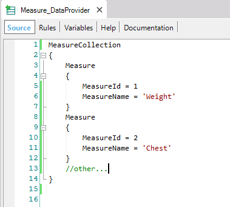
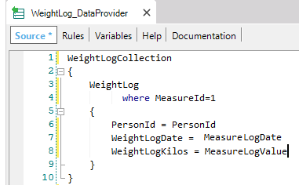

By default Dynamic Transactions are defined with its Update Policy property = Read Only. So, as we know, the data is queried in runtime, and the Transaction form does neither allow updating nor inserting nor deleting.
However, in some scenarios, the capability of allowing the update of data is practical.
To define a Dynamic Transaction that allows data updates, the following transaction properties must be set:
and you have to complete the Data Provider that is automatically created in consequence of having set Data Provider property = True.
Let's see an interesting scenario that proposes the use of a Dynamic Transaction that allows data updates.
We have a GeneXus KB for tracking body weight, with the following transactions:
Person
{
PersonId*
PersonName
GenderId
GenderName
}
Gender
{
GenderId*
GenderName
GenderMembers = count(PersonName)
}
WeightLog
{
PersonId*
WeightLogDate*
WeightLogKilos
}
Now suppose that, with the system already up and running, people want to track not only their weight but also other body measurements (like chest or waist circumference). The database model needs to be redesigned in order to store this new data. Of course, it's possible to create a new Transaction object for each new measurement to be tracked, but a better (and more extensible) design is to have just one Transaction for any kind of measurements:
MeasureLog
{
PersonId*
MeasureId*
MeasureLogDate*
MeasureLogValue
}
in conjunction with a Measure Transaction:
Measure
{
MeasureId*
MeasureName
}
whose Data Provider property = True, its Used To property = Retrieve Data, its Update Policy property = Read Only, and its associated Data Provider is:

The WeightLog transaction is not needed anymore since all measurements will be stored in the physical table associated with the new MeasureLog transaction. However, the application code still references it as Base Transaction in many places, such as For Each statements. So, instead of removing the WeightLog transaction and having to modify wherever it is referenced, it's a good idea to change it into a Dynamic Transaction.
For that purpose, you have to:

With these definitions, the WeightLog Transaction can still be used in queries exactly as before (no code changes are needed to any For Each statement that references it, and its attributes can be kept in grids, printblocks, etc.). However, you must not forget that if you define a transaction as Dynamic, the associated physical tables will no longer exist. So, before proceeding with this proposal, you have to move the data (in this case, weights from WeightLog to MeassureLog table).
Well, and what about the updates? The user is accustomed to executing the WeightLog Transaction form, so, the idea is he can use both: the MeasureLog and the WeightLog transactions.
By setting the WeightLog Transaction Update Policy property = Updatable, its Form will allow the user to edit the data; but in which physical table the updates will be stored?
You have to codify the Insert, Update and Delete events in the WeightLog Transaction Events section, in order to specify his intention. In this example, the logical solution is to store the data in the MeasureLog physical table, using the Business Component concept as follows:
Event Insert(&Messages) &MeasureLog = new() &MeasureLog.PersonId = PersonId &MeasureLog.MeasureId = 1 &MeasureLog.MeasureLogDate = WeightLogDate &MeasureLog.MeasureLogValue = WeightLogKilos &MeasureLog.Insert() &Messages = &MeasureLog.GetMessages() Endevent Event Update(&Messages) &MeasureLog.Load(PersonId, 1, WeightLogDate) &MeasureLog.MeasureLogValue = WeightLogKilos &MeasureLog.Update() &Messages = &MeasureLog.GetMessages() Endevent Event Delete(&Messages) &MeasureLog.Load(PersonId, 1, WeightLogDate) &MeasureLog.Delete() &Messages = &MeasureLog.GetMessages() Endevent
Note that after applying respectively the Insert(), Update() and Delete() methods to the &MeasureLog business component variable, you obtain the messages and/or errors triggered (in the &Messages collection variable). By declaring the &Messages variable as a parameter in each event (as shown), those messages are displayed in the WeightLog Dynamic Transaction in a transparent way, like its own messages.
In this way, the WeightLog Dynamic Transaction can be used exactly the same way as before and no changes are necessary to dependent programs. This also applies if the transaction is used as Business Component, because it is a Dynamic Transaction that allows updates and the corresponding events to store the data are codified.
Some considerations must be taken into account to use this feature:
| Backlinks | |
| Automatic data population associated to transactions - FAQ | Toc:Dynamic Transactions |
| Specification Codes from spc0150 onwards | Update Policy property |